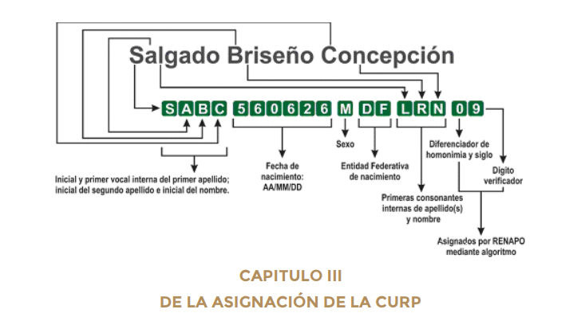

🧠 La CURP como problema de análisis
La Clave Única de Registro de Población (CURP) es una clave alfanumérica de 18 caracteres. Para comprenderla conviene dividirla en bloques y estudiar qué dato origina cada posición.
Identificación
Relaciona a una persona con registros y trámites.
Estructura
Cada carácter tiene una posición, un origen y una regla.
Análisis
Es un buen ejercicio para entender cadenas, fechas y validaciones.
La CURP es un identificador utilizado para distinguir individualmente a una persona dentro de registros administrativos. Su estructura combina información derivada del nombre, apellidos, fecha de nacimiento, sexo, lugar de nacimiento y caracteres de control.
Identificación
Permite relacionar a una persona con distintos registros y trámites.
Uso cotidiano
Se solicita en trámites escolares, laborales, de salud, administrativos y gubernamentales.
Estructura definida
No es una cadena al azar: cada bloque responde a una regla de formación.
Valor didáctico
Es un excelente ejercicio para practicar análisis, cadenas, validaciones y reglas especiales.
Para comprenderla es útil separar sus 18 posiciones en siete bloques. En el siguiente ejemplo se observa la clave:
SABC560626MDFLRN09
Iniciales y vocal interna.
Nacimiento en formato AAMMDD.
Una letra correspondiente al dato registrado.
Código del lugar de nacimiento.
Consonantes internas de apellidos y nombre.
Relaciona homonimia y siglo de nacimiento.
Carácter de control.


Los primeros cuatro caracteres son especialmente importantes porque dependen de la forma en que estén escritos los apellidos y nombres. Aquí aparecen varias de las excepciones más comunes.
| Posición | Origen | Regla general |
|---|---|---|
| 1 | Primer apellido | Se toma su primera letra. |
| 2 | Primer apellido | Se busca la primera vocal interna, después de la letra inicial. |
| 3 | Segundo apellido | Se toma su primera letra. Si no existe segundo apellido, se usa X. |
| 4 | Nombre | Se toma la inicial del nombre significativo, considerando reglas especiales. |
Salgado Briseño Concepción: S de Salgado + A como primera vocal interna + B de Briseño + C de Concepción = SABC.
Este bloque utiliza seis dígitos. Los dos primeros corresponden al año, los dos siguientes al mes y los últimos dos al día.
Año
Se usan los dos últimos dígitos.
1990 → 90
Mes
Siempre debe ocupar dos posiciones.
Junio → 06
Día
También ocupa dos posiciones.
Día 5 → 05
15 de febrero de 1990 → 900215.
Carácter 11 · Sexo
Este carácter representa el sexo registrado en los documentos probatorios. En los materiales tradicionales de CURP se emplean:
- H = Hombre
- M = Mujer
Caracteres 12 y 13 · Entidad federativa
Se utiliza un código de dos letras que identifica la entidad de nacimiento. En una solución informática conviene tratar estos códigos como una tabla de consulta, porque no deben inventarse.
Ejemplos útiles: BC = Baja California, NL = Nuevo León, YN = Yucatán, NE = nacido en el extranjero.
En este bloque se buscan consonantes internas. Esto significa que se ignora la letra inicial y se avanza dentro de la palabra hasta encontrar la primera consonante útil.
| Posición | Origen | Resultado del ejemplo |
|---|---|---|
| 14 | Salgado | L |
| 15 | Briseño | R |
| 16 | Concepción | N |
Salgado → L, Briseño → R, Concepción → N. El bloque queda LRN.
Carácter 17
Se utiliza como elemento diferenciador cuando dos personas pudieran compartir los primeros caracteres de la clave. Además, históricamente se relaciona con el siglo de nacimiento.
Para fines escolares conviene entender su función, pero no inventarlo como si fuera un dato libre.
Carácter 18
Es un dígito verificador. Su propósito es ayudar a comprobar que la clave completa conserve consistencia con las reglas de validación.
En este tema basta comprender que actúa como control final de la cadena.
María y José
Si María o José aparecen junto con otro nombre, normalmente se considera el siguiente nombre significativo para determinadas posiciones.
Sin segundo apellido
Cuando no existe segundo apellido se utiliza X en la posición que corresponde.
Sin vocal interna
Si el apellido no tiene una vocal interna válida, la posición correspondiente se llena con X.
Sin consonante interna
Cuando no se encuentra consonante interna útil se utiliza X.
Partículas y preposiciones
Apellidos y nombres compuestos pueden incluir partículas que no deben tratarse como la palabra principal.
Palabras inconvenientes
Si los primeros cuatro caracteres forman una palabra inconveniente, se realiza una sustitución para evitarla.
Para resolver el problema de manera ordenada, el alumno debe pensar primero en los datos de entrada y después en cada bloque de la CURP. La clave está en no intentar formar los 18 caracteres de una sola vez.
Nombre, apellidos, fecha, sexo y lugar de nacimiento.
Identificar palabras significativas y posibles excepciones.
Iniciales y primera vocal interna.
Convertir la fecha a AAMMDD.
Sexo y código del lugar de nacimiento.
Consonantes internas.
X, María/José, partículas y palabras inconvenientes.
Posiciones 17 y 18 conforme al procedimiento correspondiente.
Para revisar reglas formales, casos especiales y criterios de asignación, se recomienda consultar el instructivo normativo correspondiente. El documento es una referencia útil cuando se desea pasar de una explicación didáctica a una validación más rigurosa.
Consultar instructivo Publicación oficialLa primera parte verifica reglas básicas con palabras y nombres. La segunda obliga a analizar datos personales y construir mentalmente los bloques de la CURP. En los ejercicios prácticos se evalúa principalmente la parte que puede deducirse directamente de los datos; las posiciones oficiales de control no deben inventarse.
A. Cinco preguntas de reglas y palabras
Pregunta 1
Para el apellido Salgado, ¿cuál es la primera vocal interna?
Pregunta 2
Si una persona se llama María Fernanda, ¿qué inicial se considera normalmente como nombre significativo?
Pregunta 3
Si una persona no tiene segundo apellido, ¿qué carácter se utiliza en la posición correspondiente?
Pregunta 4
En Briseño, ¿cuál es la primera consonante interna después de la inicial?
Pregunta 5
¿Qué formato representa correctamente la fecha dentro de la CURP?
B. Cinco ejercicios para formar mentalmente la CURP
Ejercicio 1
Concepción Salgado Briseño
Fecha: 26/06/1956 · Sexo: Mujer · Entidad: DF
¿Cuál de estas opciones representa correctamente los primeros 16 caracteres?
Ejercicio 2
Oscar Sánchez Santos
Fecha: 05/09/1970 · Sexo: Hombre · Entidad: DF
¿Qué bloque de fecha debe ocupar las posiciones 5–10?
Ejercicio 3
María Fernanda López Ruiz
Fecha: 12/03/1998 · Sexo: Mujer · Entidad: BC
¿Cuál sería el bloque inicial más razonable aplicando la regla de María/José?
Ejercicio 4
Ana Montes · Sin segundo apellido
Fecha: 08/11/2002 · Sexo: Mujer · Entidad: BC
¿Qué debe ocurrir con la posición asociada al segundo apellido?
Ejercicio 5
Luis García Pérez
Fecha: 05/01/2001 · Sexo: Hombre · Entidad: NL
¿Cuál de estas secuencias representa correctamente el bloque de fecha y sexo?
“Antes de programar una solución, primero debemos entender completamente las reglas del problema.”
— Prof. Pedro Núñez Yepiz